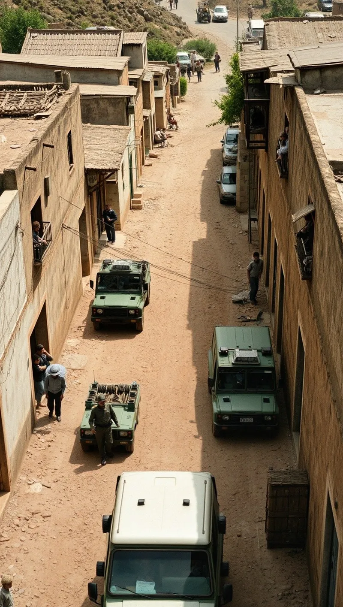
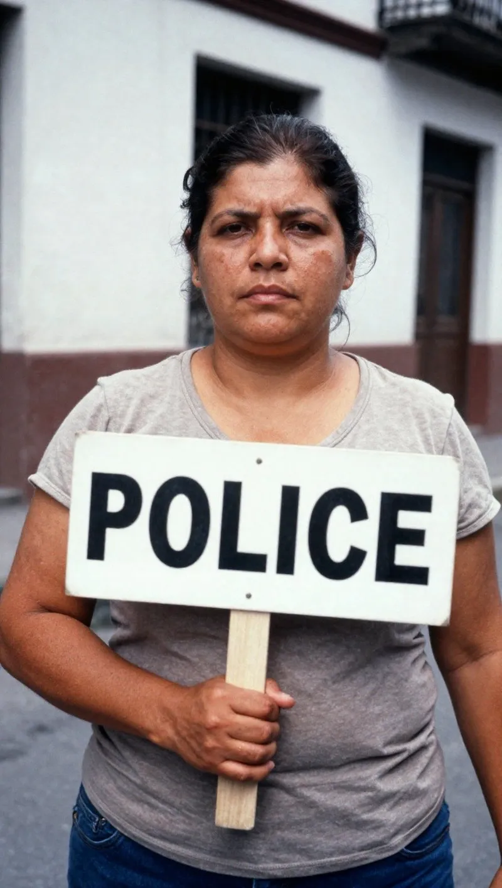
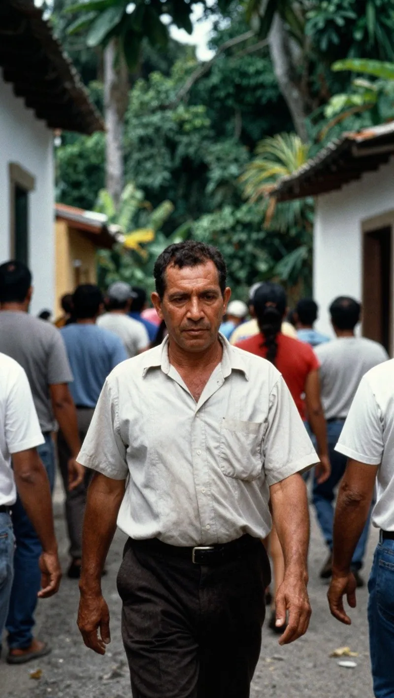
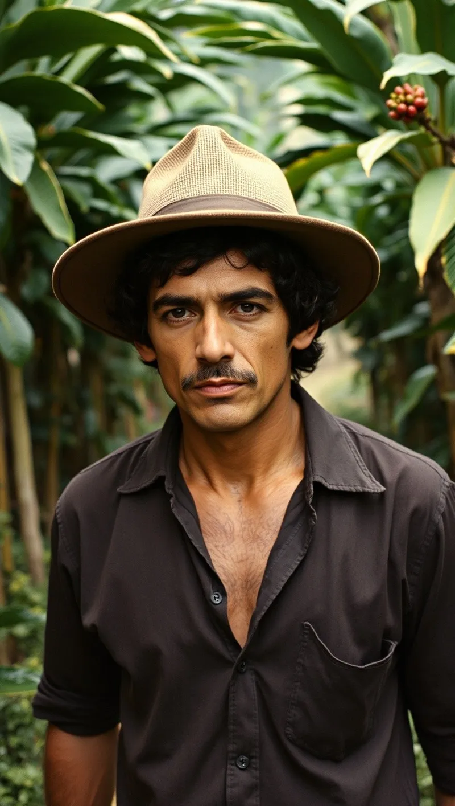
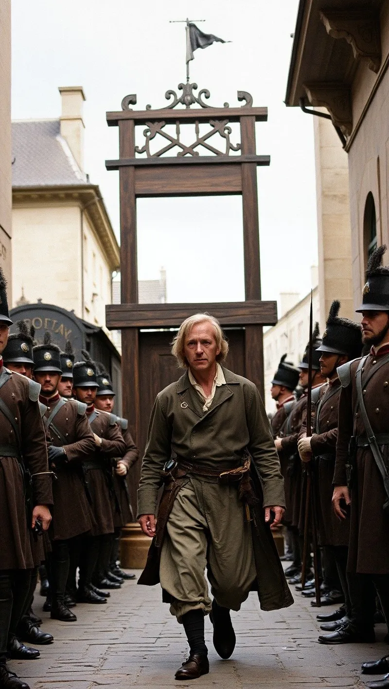
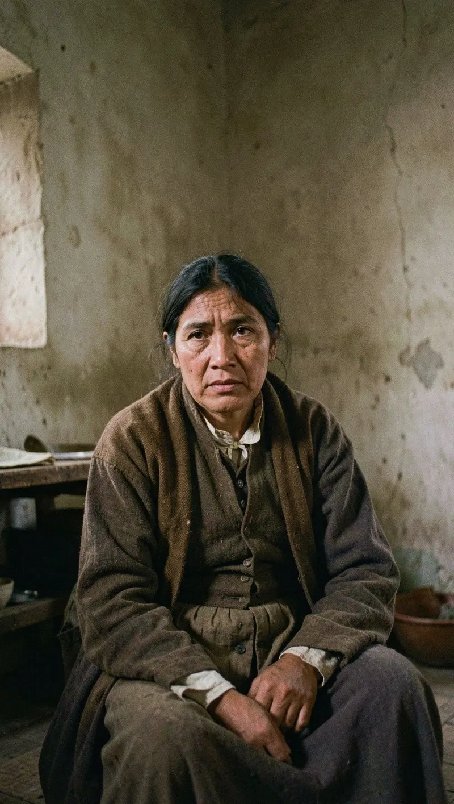
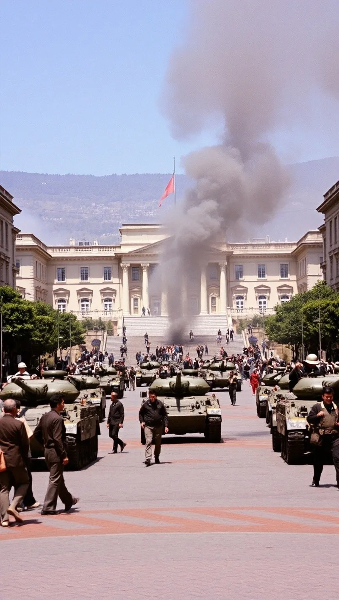

OKpolítico
OKpolíticoCómo murieron los personajes de la historia de México
Presidentes, caudillos y figuras de la Independencia y la Revolución: lo que dicen los documentos sobre su muerte, y dónde hay versiones distintas. 14 historias.
Al Capone: la muerte que no fue en la cárcel
Al Capone, el famoso jefe del Outfit de Chicago, no murió en prisión. Tras ser liberado por problemas de salud, falleció en 1947 en su residencia de Palm Island, Florida, a causa d
11 de noviembre de 2026Cleopatra: El misterio de la última faraona de Egipto
Análisis de los hechos documentados sobre el final de Cleopatra VII. Contrastamos la narrativa romana del áspid con las investigaciones toxicológicas y arqueológicas modernas que s
17 de noviembre de 2026
El capo que murió dos veces antes de la definitiva
Nazario Moreno, 'El Chayo', líder de La Familia Michoacana y Los Caballeros Templarios, fue dado por muerto oficialmente en diciembre de 2010 sin mostrar el cuerpo. La in
15 de noviembre de 2026El magnicidio de JFK bajo la lupa
Este short de OKpolítico explica cómo murió John F. Kennedy, muestra los hechos documentados y contrasta los mitos más difundidos con los informes oficiales de la Comisión Warren y
13 de noviembre de 2026
Griselda Blanco: El final de la Viuda Negra
Griselda Blanco, la 'Viuda Negra' del narcotráfico, fue asesinada en 2012. Contrastamos la versión de la Fiscalía de Colombia con reportes forenses e investigaciones inde
17 de noviembre de 2026
Guadalupe Victoria: el primer presidente que murió de epilepsia
Análisis sobre la muerte de Guadalupe Victoria, primer presidente de México. Desde su resistencia en la selva hasta su fallecimiento en Perote. Fuentes: Wikipedia, gob.mx y buscabi
21 de noviembre de 2026John Dillinger: el final del Enemigo Público Número Uno
19 de noviembre de 2026
La caída de Lucio Cabañas: el fin de la guerrilla en Guerrero
Exploramos los hechos documentados sobre la muerte de Lucio Cabañas Barrientos. Contrastamos el informe oficial de Sedena con los reportes de la CNDH y la ONU sobre la violencia po
14 de noviembre de 2026
La ejecución de Luis XVI: hechos y documentos históricos
Un análisis sobre los hechos documentados y las versiones populares en torno a la ejecución de Luis XVI en 1793.
18 de noviembre de 2026
La muerte de Josefa Ortiz de Domínguez
Exploramos los hechos documentados sobre el fallecimiento de Josefa Ortiz de Domínguez. A diferencia del mito popular que sitúa su muerte en cautiverio en 1810, registros oficiales
19 de noviembre de 2026Lázaro Cárdenas: la causa real de su muerte
Análisis sobre el fallecimiento del expresidente Lázaro Cárdenas del Río. Contrastamos la versión de la neumonía con los registros oficiales del Registro Civil, INEHRM e INEGI que
17 de noviembre de 2026
Salvador Allende: 11 de septiembre de 1973 en La Moneda
Revisamos los hechos históricos e informes forenses sobre la muerte del expresidente de Chile Salvador Allende el 11 de septiembre de 1973 durante el golpe de Estado.
15 de noviembre de 2026Preguntas frecuentes
¿Cómo murió Amado Carrillo Fuentes, el Señor de los Cielos?
Amado Carrillo Fuentes, líder del Cártel de Juárez, falleció en julio de 1997 en la Ciudad de México. Los hechos documentados sobre su deceso son contrastados con diversas versiones en el análisis de OKpolítico.
¿Cómo murió Josefa Ortiz de Domínguez?
El fallecimiento de Josefa Ortiz de Domínguez está documentado en registros oficiales que desmienten el mito popular de que murió en cautiverio en 1810.
¿De qué murió el expresidente Lázaro Cárdenas?
Sobre la muerte de Lázaro Cárdenas del Río se analiza la versión de la neumonía, contrastándola con los registros oficiales del Registro Civil, el INEGI y el INEHRM.
¿Cómo murió Francisco Ruiz Massieu?
Francisco Ruiz Massieu murió el 28 de septiembre de 1994 en la Ciudad de México. Su caso es revisado contrastando la versión oficial con informes de la CNDH.
¿Cómo murió Lucio Cabañas?
La muerte de Lucio Cabañas Barrientos, figura de la guerrilla en Guerrero, se analiza contrastando el informe oficial de Sedena con reportes de la ONU y la CNDH sobre violencia.
¿Cómo murió Al Capone?
Al Capone no murió en prisión; falleció en 1947 en su residencia de Palm Island, Florida, debido a problemas de salud tras haber sido liberado.
¿Cómo murió Griselda Blanco, la Viuda Negra?
Griselda Blanco fue asesinada en 2012. Existen contrastes entre la versión de la Fiscalía de Colombia y diversos reportes forenses e investigaciones independientes.
¿Cómo murió Nazario Moreno 'El Chayo'?
Nazario Moreno, líder de Los Caballeros Templarios y La Familia Michoacana, fue dado por muerto oficialmente en diciembre de 2010, aunque en ese momento no se mostró el cuerpo.
¿Cómo murió Salvador Allende?
El expresidente de Chile falleció el 11 de septiembre de 1973 en La Moneda durante el golpe de Estado, según indican los informes forenses y hechos históricos.
¿Cómo murió John F. Kennedy?
La muerte de John F. Kennedy se explica a través de los hechos documentados en los informes oficiales de la Comisión Warren, contrastando los mitos con la realidad.
¿Cómo murieron Bonnie y Clyde?
Bonnie Parker y Clyde Barrow murieron en una emboscada en 1934 en Luisiana, según indican los documentos oficiales y reportes independientes.
¿Cómo murió el rey Luis XVI?
Luis XVI fue ejecutado en 1793. Existen análisis sobre los hechos documentados y las versiones populares que rodean su ejecución.
¿Cómo murió Cleopatra?
Sobre el final de Cleopatra VII se contrastan las investigaciones arqueológicas y toxicológicas modernas con la narrativa romana que afirma que murió por la picadura de un áspid.
¿Cuándo y dónde murió Al Capone?
Al Capone falleció en 1947 en su residencia de Palm Island, Florida. El jefe del Outfit de Chicago murió fuera de prisión, luego de haber sido liberado debido a problemas de salud.
¿Cómo murió el líder del Cártel de Juárez, Amado Carrillo Fuentes?
Amado Carrillo Fuentes, conocido como el Señor de los Cielos, falleció en julio de 1997 en la Ciudad de México. Existen diversos hechos documentados y versiones sobre su deceso.
¿En qué fecha murió Francisco Ruiz Massieu?
Francisco Ruiz Massieu murió el 28 de septiembre de 1994 en la Ciudad de México. Su caso es considerado un magnicidio y existen contrastes entre la versión oficial y los informes de la CNDH.
¿Cuándo murió el rey Luis XVI?
Luis XVI fue ejecutado en 1793. Existen análisis sobre los hechos documentados y diversas versiones populares en torno a su ejecución.
¿Cómo fue la muerte de Nazario Moreno 'El Chayo'?
Nazario Moreno, líder de La Familia Michoacana y Los Caballeros Templarios, fue dado por muerto oficialmente en diciembre de 2010 sin que se mostrara el cuerpo, aunque existen investigaciones sobre su muerte definitiva.
¿Cuándo murió Griselda Blanco, la Viuda Negra?
Griselda Blanco fue asesinada en 2012. Sobre su muerte existen reportes forenses, investigaciones independientes y la versión oficial de la Fiscalía de Colombia.
¿Qué pasó con Salvador Allende el 11 de septiembre de 1973?
El expresidente de Chile, Salvador Allende, murió el 11 de septiembre de 1973 en La Moneda durante el golpe de Estado, según indican los hechos históricos e informes forenses.
¿Cuándo y dónde murieron Bonnie y Clyde?
Bonnie Parker y Clyde Barrow murieron en 1934 en Luisiana. Su fallecimiento ocurrió durante una emboscada, según detallan los documentos oficiales y reportes independientes.
¿Cuál es la verdad sobre la muerte de Josefa Ortiz de Domínguez?
Registros oficiales contradicen el mito popular que afirma que Josefa Ortiz de Domínguez murió en cautiverio en 1810, permitiendo explorar los hechos documentados sobre su fallecimiento.
¿Cuál fue la causa de muerte de Lázaro Cárdenas?
Existe un análisis sobre el fallecimiento del expresidente Lázaro Cárdenas del Río que contrasta la versión de la neumonía con los registros oficiales del Registro Civil, el INEGI y el INEHRM.
¿Quién fue John Dillinger y cómo terminó su vida?
John Dillinger fue conocido como el Enemigo Público Número Uno; el texto indica que existe información documentada sobre el final de su vida.
¿Cómo fue la muerte de Cleopatra VII?
Sobre el final de la última faraona de Egipto existen contrastes entre la narrativa romana, que menciona el uso de un áspid, y las investigaciones arqueológicas y toxicológicas modernas.
¿Qué pasó con Nazario Moreno 'El Chayo'?
Nazario Moreno, líder de La Familia Michoacana y Los Caballeros Templarios, fue dado por muerto oficialmente en diciembre de 2010, aunque en ese momento no se mostró el cuerpo.
¿Cómo murió John F. Kennedy según los informes oficiales?
La muerte de John F. Kennedy está documentada en los informes oficiales de la Comisión Warren, los cuales contrastan con diversos mitos difundidos sobre este magnicidio.
¿Cuándo fue ejecutado Luis XVI?
Luis XVI fue ejecutado en 1793. Existen análisis sobre los hechos documentados y diversas versiones populares en torno a su ejecución.
¿Cuándo y dónde murió Amado Carrillo Fuentes?
Amado Carrillo Fuentes, líder del Cártel de Juárez y conocido como el Señor de los Cielos, falleció en julio de 1997 en la Ciudad de México.
¿Cuál es la verdad sobre el fallecimiento de Josefa Ortiz de Domínguez?
Registros oficiales contradicen el mito popular que sitúa su muerte en cautiverio en 1810, permitiendo explorar los hechos documentados sobre su fallecimiento.
¿Qué ocurrió con Salvador Allende el 11 de septiembre de 1973?
El expresidente de Chile, Salvador Allende, murió el 11 de septiembre de 1973 en La Moneda durante el golpe de Estado, según indican informes forenses y hechos históricos.
¿Cómo murieron Bonnie Parker y Clyde Barrow?
Bonnie y Clyde murieron en una emboscada ocurrida en 1934 en Luisiana, según detallan los documentos oficiales y reportes independientes.
¿Cuándo y dónde murió Francisco Ruiz Massieu?
Francisco Ruiz Massieu murió el 28 de septiembre de 1994 en la Ciudad de México. Su caso es analizado contrastando la versión oficial con informes de la CNDH.